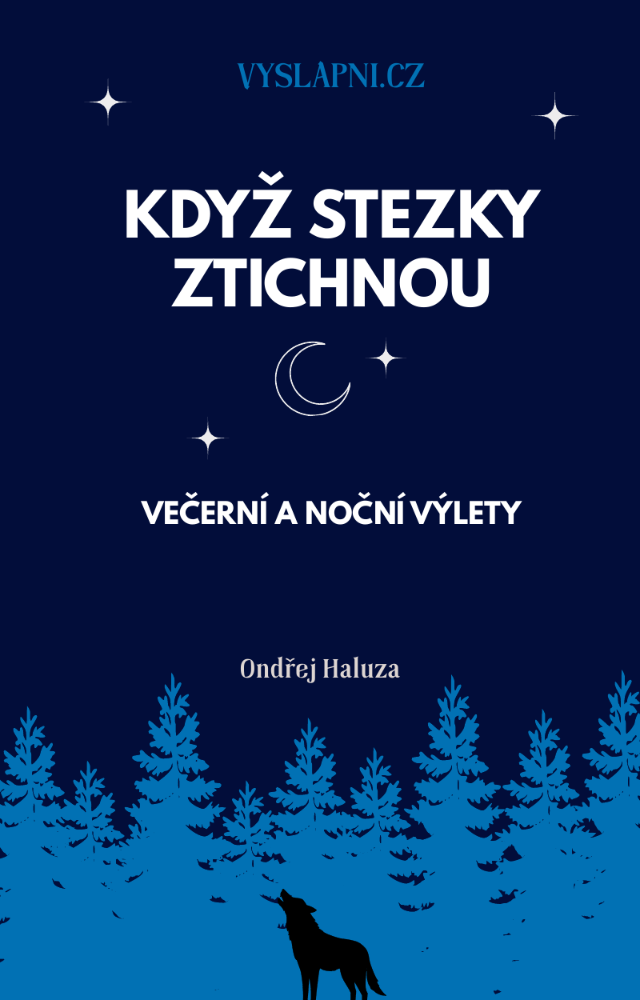
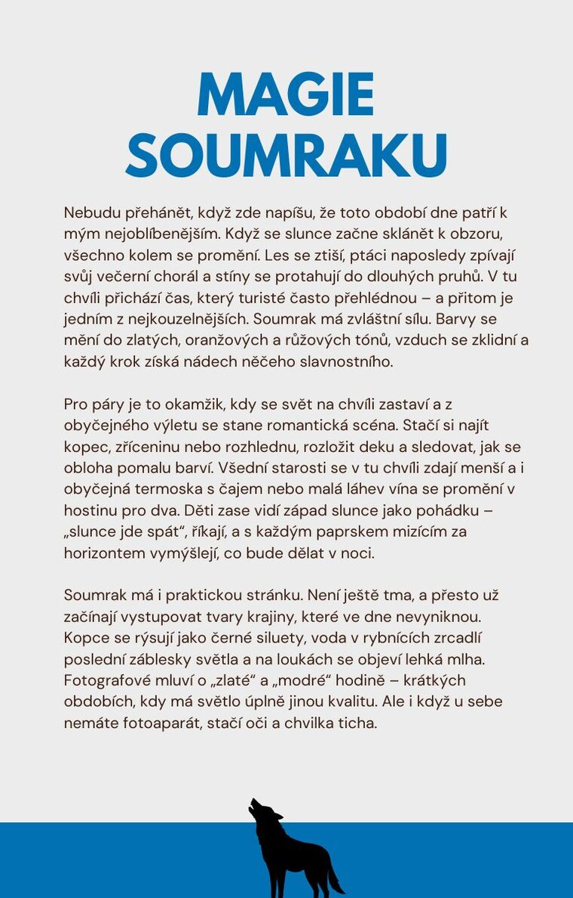
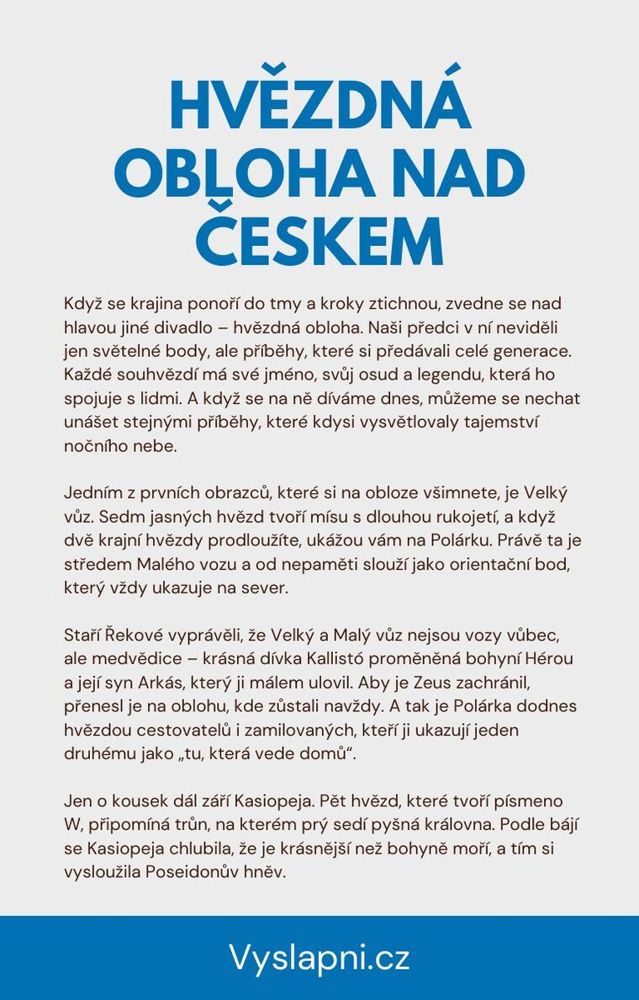
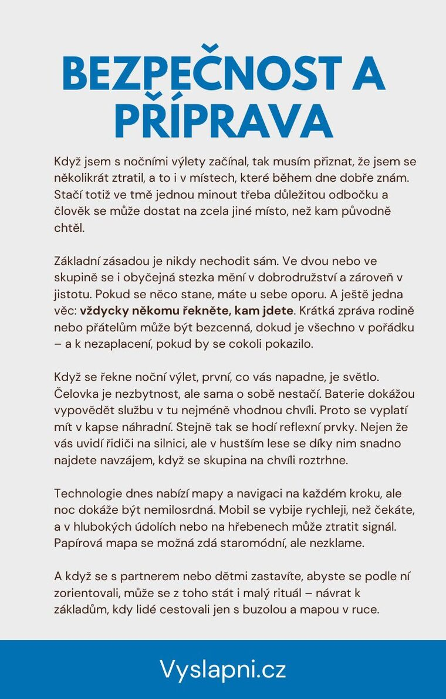

E-book · zdarma
Když stezky ztichnou
Večerní a noční výlety
Krátký průvodce tím, jak vyrazit po setmění v klidu. Soumrak, hvězdy, meteorické roje, bezpečná příprava a focení noci — sami, v páru i s dětmi.
26 stran · PDF · bez registrace
Výlet, který začíná, když ostatní míří domů
Večer se krajina ztiší, barvy se změní a nad hlavou se otevře obloha, kterou přes den neuvidíte. Nemusí to být dlouhá túra — stačí známá krátká trasa, čelovka a chuť zůstat venku o hodinu déle.
E-book z Vyšlápni.cz je inspirace, ne učebnice astronomie. Provede vás soumrakem, noční oblohou nad Českem i praktickou přípravou, ať vyrážíte ve dvou, nebo berete děti „dívat se, jak slunce jde spát“.
Co uvnitř najdete
- Magie soumraku — zlatá a modrá hodina, vyhlídka, deka a tempo bez spěchu.
- Hvězdná obloha nad Českem: Velký vůz, Kasiopeja, Orion a příběhy, které k nim patří.
- Meteorické roje a kdy kvůli nim vyrazit — včetně Perseid a místa dál od světel.
- Bezpečnost a příprava: čelovka, náhradní světlo, mapa, vrstvy a někdo, kdo ví, kam jdete.
- Jak vybrat krátkou známou trasu a co se v lese mění, když se setmí.
- Focení v noci mobilem — stabilita, časovač a místa s méně světelným smogem.
Napsal Ondřej Haluza z Vyšlápni.cz.
Noční výlet je zážitek, který se nestane rutinou. A právě proto si ho zapamatujete.
Náhled
Tři strany z knihy: soumrak, hvězdná obloha a příprava na cestu. Celých 26 stran je v PDF zdarma.



Stáhnout e-book
Celé PDF je zdarma. Žádná objednávka, žádný e-mail.
Když stezky ztichnou — večerní a noční výlety
26 stran · PDF · zdarma